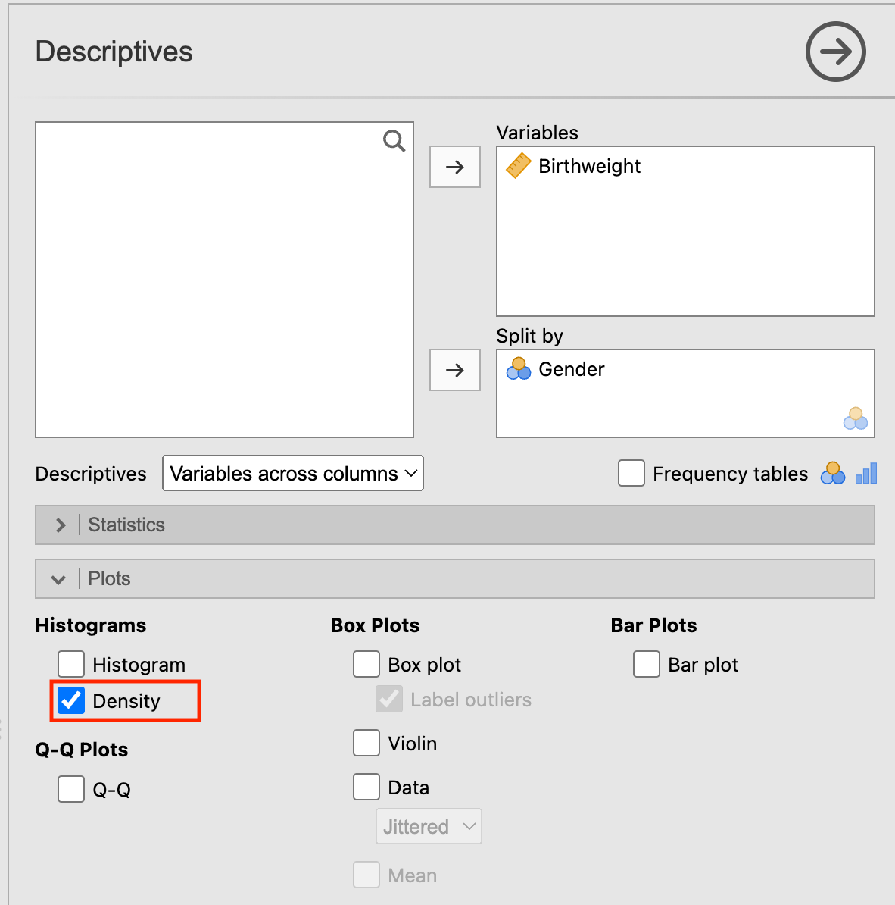
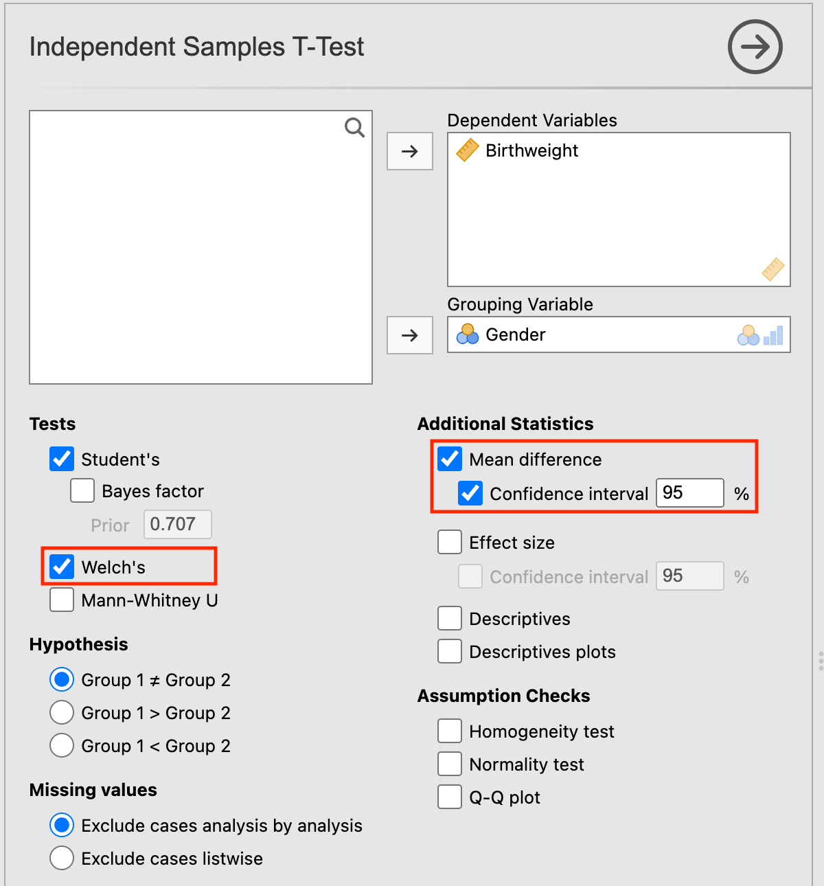
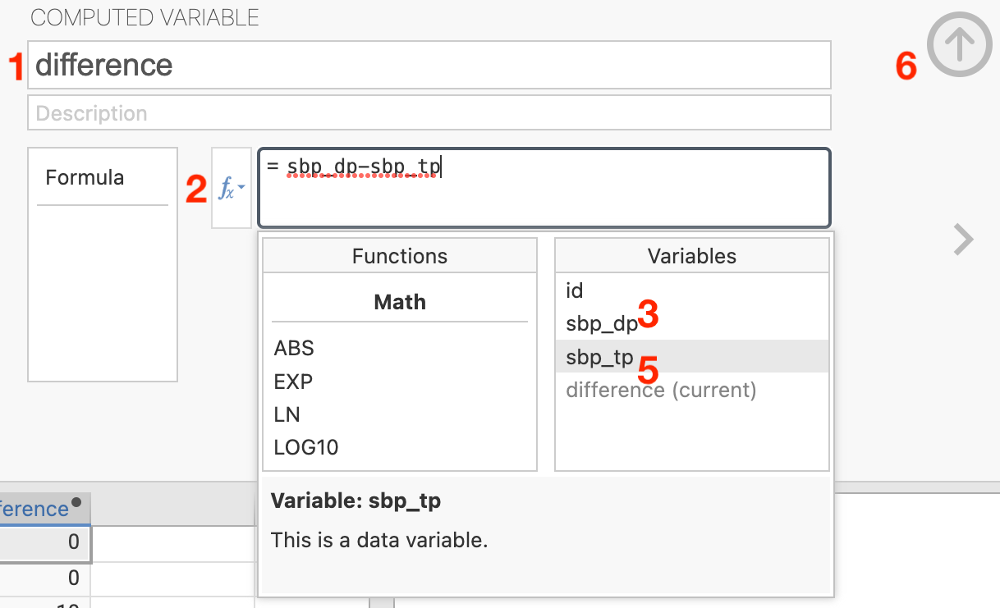
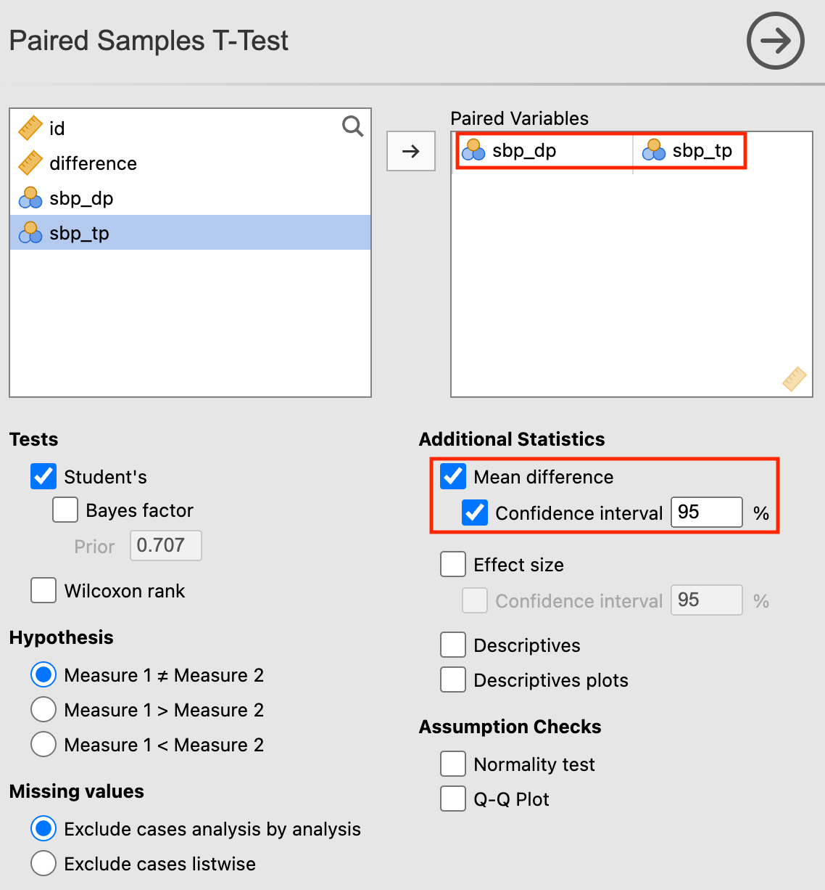
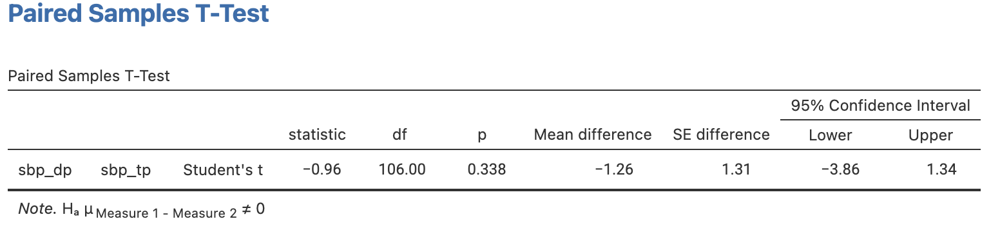
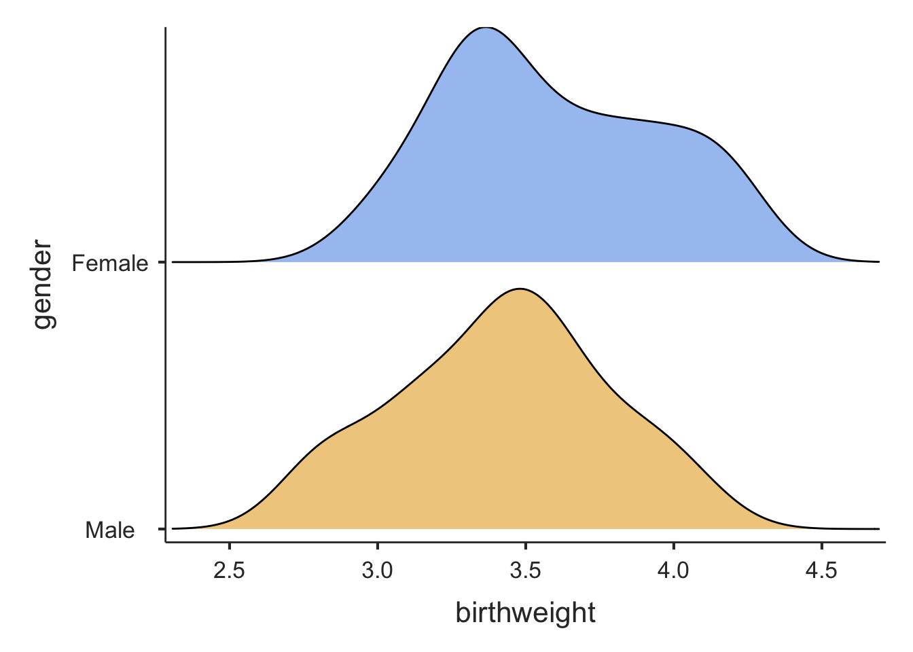
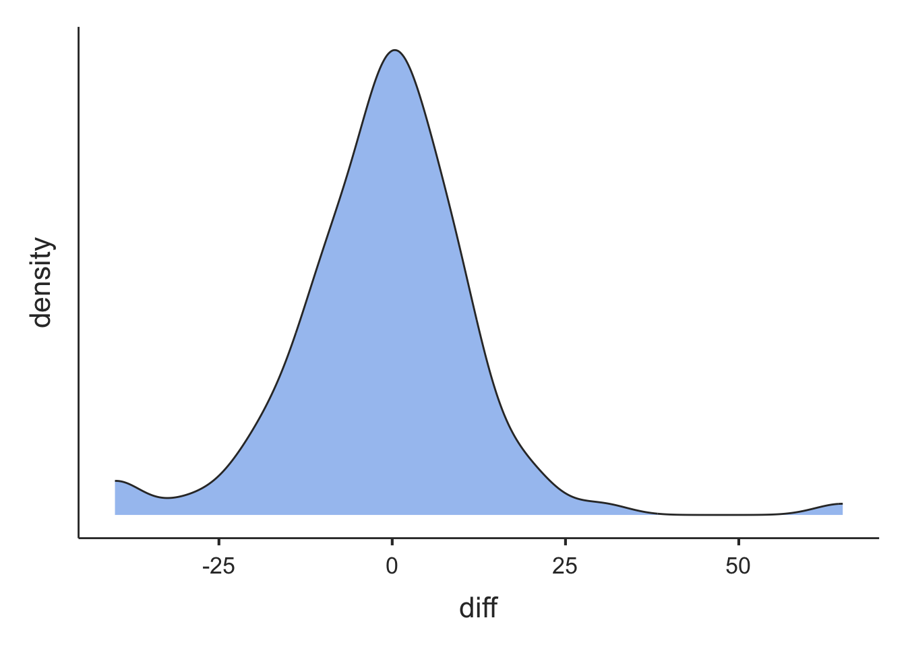

Learning objectives
By the end of this module you will be able to:
- Decide whether to use an independent samples t-test or a paired t-test to compare two the means of two groups;
- Conduct and interpret the results from an independent samples t-test;
- Describe the assumptions of an independent samples t-test;
- Conduct and interpret the results from a paired t-test;
- Describe the assumptions of a paired t-test;
- Conduct an independent samples t-test and a paired t-test using software;
- Report results and provide a concise summary of the findings of statistical analyses.
Optional readings
Kirkwood and Sterne (2001); Sections 7.1 to 7.5. [UNSW Library Link]
Bland (2015); Section 10.3. [UNSW Library Link]
5.1 Introduction
In Module 4, a one-sample t-test was used for comparing a single mean to a hypothesised value. In health research, we often want to compare the means between two groups. For example, in an observational study, we may want to compare cholesterol levels in people who exercise regularly to the levels in people who do not exercise regularly. In a clinical trial, we may want to compare cholesterol levels in people who have been randomised to a dietary modification or to usual care. In this module, we show how to compare the means of two groups where the analysis variable is normally distributed.
From the decision tree presented in the Appendix, we can see that if we have a continuous outcome measure and two categorical groups that are not related, i.e. a binary exposure measurement, the test for such data is an independent samples t-test. The test is also sometimes called a 2-sample t-test.
In research, data are often ‘paired’ or ‘matched’, that is the two data points are related to one another. This occurs when measurements are taken:
- From each participant on two occasions, e.g. at baseline and follow-up in an experimental study or in a longitudinal cohort study;
- From related people, e.g. a mother and daughter or a child and their sibling;
- From related sites in the same person, e.g. from both limbs, eyes or kidneys;
- From matched participants e.g. in a matched case-control study;
- In cross-over clinical trials where the patient receives both drugs, often in random order.
An independent samples t-test cannot be used for analysing paired or matched data because the assumption that the two groups are independent is violated. Treating paired or matched measurements as independent samples would artificially inflate the sample size and lead to inaccurate P values. When the data are related in a paired or matched way and the outcome is continuous, a paired t-test is the appropriate statistic to use if the data are normally distributed.
5.2 Independent samples t-test
An independent samples t-test is a parametric test that is used to assess whether the mean values of two groups are different from one another. Thus, the test is used to assess whether two mean values are similar enough to have come from the same population or whether the difference between them is so large that the two groups can be considered to have come from separate populations with different characteristics.
The null hypothesis is that the mean values of the two groups are not different, that is:
H0: (\(\mu_1 - \mu_2\)) = 0
Rejecting the null hypothesis using an independent samples t-test indicates that the difference between the means of the two groups is large in relation to the variability in the samples and is unlikely to be due to chance or to sampling variation.
5.2.1 Assumptions for an independent samples t-test
The assumptions that must be met before an independent samples t-test can be used are:
- The two groups are independent
- The measurements are independent
- The analysis variable must be continuous and must be normally distributed in each group
The first two assumptions are determined by the study design. The two samples must be independent, i.e. if a person is in one group then they cannot be included in the other group, and the measurements within a sample must be independent, i.e. each person must be included in their group once only.
The third assumption of normality is important although t-tests are robust to some degree of non-normality as long as there are no influential outliers and, more importantly, if the sample size is large. We examined how to assess normality in Module 2. If the data are not normally distributed, it may be possible to transform them using a mathematical function such as a logarithmic transformation. If not, then we may need to use non-parametric tests. This is examined in Module 9.
Traditionally, the variance of the analysis variable in each group was assumed to be equal. However, this assumption can be relaxed by using Welch’s variation of the t-test. It has been recommended that this unequal-variances t-test be used in most, if not all situations (West 2021; Delacre, Lakens, and Leys 2017; Ruxton 2006).
5.2.2 Worked Example 5.1
In an observational study of a random sample of 100 full term babies from the community, birth weight and gender were measured. There were 44 male babies and 56 female babies in the sample. The research question asked whether there was a difference in birth weights between boys and girls. The two groups are independent of each other and therefore an independent samples t-test can be used to test the null hypothesis that there is no difference in weight between the genders.
Exploratory data analysis of the variable of interest in each group should always be obtained before a t-test is undertaken to ensure that the assumptions are met. In particular, the distribution of the analysis variable should be examined for each group, as shown in Figure 5.1. The mod05_birthweight.rds dataset is available on Moodle.
The plots show that the data are approximately normally distributed: the density curves are relatively bell shaped and symmetric, and there are no outliers.
We can also describe the data using summary statistics:
Characteristic | Female | Male |
|---|---|---|
Birthweight | ||
Number | 56 | 44 |
Mean (SD) | 3.59 (0.36) | 3.42 (0.35) |
Median (Q1, Q3) | 3.53 (3.32, 3.88) | 3.43 (3.15, 3.63) |
Range | 2.95 to 4.25 | 2.75 to 4.10 |
The table shows that girls have a mean weight of 3.59 kg (SD 0.36) and boys have a mean weight of 3.42 kg (SD 0.35) with females being heavier than males. The variabilities of birth weight (i.e. the standard deviation) are similar between the two groups.
5.2.3 Conducting and interpreting an independent samples t-test
An independent samples t-test provides us with a t statistic from which we can compute a P value. The computation of the t statistic is as follows:
\[t = \frac{{\overline{x}}_{1} - {\overline{x}}_{2}}{SE({\overline{x}}_{1} - {\overline{x}}_{2})}\]
with the standard error and degrees of freedom calculated from software. Note that by using Welch’s t-test, the degrees of freedom will usually not be a whole number, and will appear with decimals.
Looking at the formula for the t-statistic, we can see that the \(t\) is an estimate of how different the mean values are compared to the variability of the difference in means. So \(t\) will become larger as the difference in means increases with respect to the variability.
Statistical software will calculate both the t and P values. If the t-value is large, the P value will be small, providing evidence against the null hypothesis of no difference between the groups.
Table 5.2 summarises the results of an independent samples t-test using mod05_birthweight.dta or mod05_birthweight.rds. The process of conducting the t-test is summarised for jamovi and R in the following sections.
Sex | n | Mean (SE) | 95% Confidence Interval |
|---|---|---|---|
Female | 56 | 3.59 (0.049) | 3.49 to 3.68 |
Male | 44 | 3.42 (0.053) | 3.31 to 3.53 |
Difference | 0.17 (0.072) | 0.02 to 0.31 |
Here we see that girls are heavier than boys, and the mean difference in weights between the genders is 0.17 kg (95% CI 0.02, 0.31). We are 95% confident that the true mean difference of weight between girls and boys lies between 0.02 and 0.31 kg. Note that this interval does not contain the null value of 0.
Here we are testing the null hypothesis of no difference in mean birthweights between females and males: a two-sided test. The t-value is calculated as 2.30 with 93.5 degrees of freedom, and yields a two-sided P value of 0.023, providing evidence of a difference in mean birthweight between sex.
5.3 Paired t-tests
If the outcome of interest is the difference in the continuously outcome measurement between each pair of observations, a paired t-test is used. In effect, a paired t-test is used to assess whether the mean of the differences between the two related measurements is significantly different from zero. In this sense, a paired t-test is very closely aligned with a one sample t-test.
When using a paired t-test, the variation between the pairs of measurements is the most important statistic. The variation between the participants is of little interest.
For related measurements, the data for each pair of values must be entered on the same row of the spreadsheet. Thus, the number of rows in the data sheet is the number of pairs of observations. Thus, the effective sample size is the total number of pairs and not the total number of measurements.
5.3.1 Assumptions for a paired t-test
The assumptions for a paired t-test are:
- the outcome variable is continuous
- the differences between the pair of the measurements are normally distributed
For a paired samples t-test, it is important to test whether the differences between the two measurements are normally distributed. If the assumptions for a paired t-test cannot be met, a non-parametric equivalent is a more appropriate test to use (Module 9).
5.3.2 Computing a paired t-test
The null hypothesis for using a paired t-test is as follows:
H0: Mean (Measurement1 – Measurement2) = 0
To compute a t-value, the size of the mean difference between the two measurements is compared to the standard error of the paired differences, i.e.
\[t = \frac{\overline{d}}{SE(\overline{d})}\]
with n–1 degrees of freedom, where n is the number of pairs.
Because the standard error becomes smaller as the sample size becomes larger, the t-value increases as the sample size increases for the same mean difference.
5.3.3 Worked Example 5.2
A total of 107 people were recruited into a study to assess whether ankle blood pressure measured in two different sites would be the same. For each person, systolic blood pressure (SBP) was measured in two sites: dorsalis pedis and tibialis posterior.
The dataset mod05_ankle_bp.xls is available on Moodle. First, we need to compute the pairwise difference between SBP measured in the two sites. The distribution of the difference between SBP measured in dorsalis pedis and tibialis posterior is shown in Figure 5.2. The differences approximate a normal distribution and therefore a paired t-test can be used.
The paired t-test can be performed using statistical software, with a summary of the results presented in Table 5.3. We can see that the mean SBP is very similar in the two sites.
Site | n | Mean (SE) | 95% Confidence Interval |
|---|---|---|---|
Dorsalis pedis | 107 | 116.7 (3.46) | (109.9 to 123.6) |
Tibialis posterior | 107 | 118.0 (3.43) | (111.2 to 124.8) |
Difference | 107 | -1.3 (1.31) | (-3.9 to 1.3) |
The t-value is calculated as −0.96 with 106 degrees of freedom, providing a two-sided P-value of 0.34. Thus these data provide no evidence of a difference in systolic blood pressure between the two sites.
Jamovi notes
5.4 Checking data for the independent samples t-test
5.4.1 Examining variable distributions by a second variable
We can use Analyses > Exploration > Descriptives to obtain the distribution plots in Figure 5.1. Choose birthweight to appear in the Variables box, and gender as the Split by variable. Choose Density in the Plots section:
Jamovi also produces summary statistics for each level of the Split by variable, and we can select the statistics of interest in the Statistics section as necessary.

5.5 Independent samples t-test
To carry out an independent sample t-test, go to Analyses > T-Tests > Independent Samples T-Test. Move birthweight into Dependent variables and gender as the Grouping Variable. Because we don’t assume equal variances of birthweight for males and females, we tick the Welch’s box.
In order to obtain an estimate of the difference in means, with its 95% Confidence Interval, tick the relevant boxes in Additional Statistics:

5.6 Checking the assumptions for a Paired t-test
Before performing a paired t-test, you must check that the assumptions for the test have been met. Using the dataset mod05_ankle_bp.xls to show that the difference between the pair of measurements between the sites is normally distributed, we first need to compute a new variable of the differences.
To create a new column at the end of your dataset, click a cell in the first empty column, then choose Data > Compute. We want to compute difference as sbp_dp − sbp_tp, so we enter this in the formula box as below:
- Specify the name of the variable to be created: here
difference - Click the f x button to display a list of variable names in your dataset
- Double-click the variable
sbp_dpto bring it into the formula box - Type
-to represent “minus” - Double-click the variable
sbp_tpto bring it into the formula box (do not worry if your formula is underlined in red, this is simply a spell-check) - Click the up arrow to close the Compute dialog box
(Note that steps 3 to 5 could also be completed by typing the formula.)
You will see a new column called difference which represents the difference between the two blood pressures.

A density plot of the differences can be constructed in the usual way.
5.7 Paired t-Test
Using the same blood pressure data as previously, choose Analyses > T-Tests > Paired Samples T-Test. Select sbp_dp and sbp_tp as the Paired Variables.
To obtain more informative output, select Mean difference and Confidence interval as additional statistics. The dialog box will look like:

With the following output:

R notes
5.8 Checking data for the independent samples t-test
5.8.1 Examining variable distributions by a second variable
We can use the a splitBy variable in the descriptives function in the jmv package to obtain summary statistics for each level of a grouping variable. Further, specifying dens = TRUE will produce density plots for the analysis variable for each level of the grouping variable.
For example, to create the distribution plots in Figure 5.1, we can use
library(jmv)
bwt <- readRDS("data/examples/mod05_birthweight.rds")
descriptives(data=bwt, vars=birthweight, splitBy=gender, dens=TRUE)
DESCRIPTIVES
Descriptives
───────────────────────────────────────────────
gender birthweight
───────────────────────────────────────────────
N Female 56
Male 44
Missing Female 0
Male 0
Mean Female 3.587411
Male 3.421364
Median Female 3.530000
Male 3.430000
Standard deviation Female 0.3629788
Male 0.3536165
Minimum Female 2.950000
Male 2.750000
Maximum Female 4.250000
Male 4.100000
─────────────────────────────────────────────── 
5.9 Independent samples t-test
We can use the ttestIS() (t-test, independent samples) function from the jmv package to perform the independent samples t-test. We include the meanDiff=TRUE and ci=TRUE options to obtain the difference in means, with its 95% confidence interval. We can request a Welch’s test (which does not assume equal variances) by the welchs=TRUE option:
ttestIS(data=bwt, vars=birthweight, group=gender, meanDiff=TRUE, ci=TRUE, welchs=TRUE)
INDEPENDENT SAMPLES T-TEST
Independent Samples T-Test
───────────────────────────────────────────────────────────────────────────────────────────────────────────────────────────────────
Statistic df p Mean difference SE difference Lower Upper
───────────────────────────────────────────────────────────────────────────────────────────────────────────────────────────────────
birthweight Student's t 2.296556 98.00000 0.0237731 0.1660471 0.07230265 0.02256481 0.3095293
Welch's t 2.303840 93.54377 0.0234458 0.1660471 0.07207403 0.02293328 0.3091609
───────────────────────────────────────────────────────────────────────────────────────────────────────────────────────────────────
Note. Hₐ μ <sub>Female</sub> ≠ μ <sub>Male</sub>5.10 Checking the assumptions for a Paired t-test
Before performing a paired t-test, you must check that the assumptions for the test have been met. Using the dataset mod05_ankle_bp.xls to show that the difference between the pair of measurements between the sites is normally distributed, we first need to compute a new variable of the differences and examine its distribution.
library(readxl)
sbp <- read_excel("data/examples/mod05_ankle_bp.xlsx")
sbp$diff = sbp$sbp_dp - sbp$sbp_tp
descriptives(data=sbp, vars=diff, dens=TRUE)
DESCRIPTIVES
Descriptives
───────────────────────────────────
diff
───────────────────────────────────
N 107
Missing 0
Mean -1.261682
Median 0.000000
Standard deviation 13.56489
Minimum -40.00000
Maximum 65.00000
─────────────────────────────────── 
While there is a large difference in blood pressure (around 60 mmHg) that warrants further checking, the curve is roughly symmetric with an approximately Normal distribution.
5.11 Paired t-Test
To perform a paired t-test we will use the dataset mod05_ankle_bp.xls. We can perform a paired t-test using the ttestPS() function within the jmv package, where we defined the paired observations as: `pairs=list(list(i1 = ‘variable1’, i2 = ‘variable2’))
ttestPS(data=sbp, pairs=list(list(i1 = 'sbp_dp', i2 = 'sbp_tp')), meanDiff=TRUE, ci=TRUE)
PAIRED SAMPLES T-TEST
Paired Samples T-Test
───────────────────────────────────────────────────────────────────────────────────────────────────────────────────────────────────────
statistic df p Mean difference SE difference Lower Upper
───────────────────────────────────────────────────────────────────────────────────────────────────────────────────────────────────────
sbp_dp sbp_tp Student's t -0.9621117 106.0000 0.3381832 -1.261682 1.311368 -3.861596 1.338232
───────────────────────────────────────────────────────────────────────────────────────────────────────────────────────────────────────
Note. Hₐ μ <sub>Measure 1 - Measure 2</sub> ≠ 0The syntax of the ttestPS function is a little cumbersome. The t.test function can be used as an alternative:
t.test(sbp$sbp_dp, sbp$sbp_tp, paired=TRUE)
Paired t-test
data: sbp$sbp_dp and sbp$sbp_tp
t = -0.96211, df = 106, p-value = 0.3382
alternative hypothesis: true mean difference is not equal to 0
95 percent confidence interval:
-3.861596 1.338232
sample estimates:
mean difference
-1.261682 Activities
Activity 5.1
Indicate what type of t-test could be used to analyse the data from the following studies and provide reasons:
- A total of 60 university students are randomly assigned to undergo either behaviour therapy or Gestalt therapy. After twenty therapeutic sessions, each student earns a score on a mental health questionnaire.
- A researcher wishes to determine whether attendance at a day care centre increases the scores of three year old twins on a motor skills test. Random assignment is used to decide which member from each of 30 pairs of twins attends the day care centre and which member stays at home.
- A child psychologist assigns aggression scores to each of 10 children during two 60 minute observation periods separated by an intervening exposure to a series of violent TV cartoons.
- A marketing researcher measures 100 doctors’ reports of the number of their patients asking them about a particular drug during the month before and the month after a major advertising campaign.
Activity 5.2
A study was conducted to compare haemoglobin levels in the blood of children with and without cystic fibrosis. It is known that haemoglobin levels are normally distributed in children. The data are stored in Activity_5.2.csv as:
- cf: cystic fibrosis: 0=no, 1=yes
- haem: haemoglobin (g/dL)
- State the appropriate null hypothesis and alternate hypothesis
- Use jamovi or R to conduct an appropriate statistical test to evaluate the null hypothesis. Are the assumptions for the test met for this analysis to be valid?
Activity 5.3
A randomised controlled trial (RCT) was carried out to investigate the effect of a new tablet supplement in increasing the hematocrit (%) value in anaemic participants. In the study, hematocrit was measured as the proportion of blood that is made up of red blood cells. Hematocrit levels are often lower in anaemic people who do not have sufficient healthy red blood cells. In the RCT, 33 people in the intervention group received the new supplement and 31 people in the control group received standard care (i.e. the usual supplement was given). After 4 weeks, hematocrit values were measured as entered in the files Activity_S5.3.dta and Activity_S5.3.rds. In the community, hematocrit levels are normally distributed.
- State the research question and formulate a null hypothesis.
- Use jamovi or R to conduct an appropriate statistical test to answer the research question. Before using the test, check the data to see if the assumptions required for the test are met.
- Run your statistical test.
- Construct a table to show how you would report your results and write a conclusion.
Activity 5.4
A total of 41 babies aged 6 months to 2 years with haemangioma (birth mark) were enrolled in a study to test the effect of a new topical medication in reducing the volume of their haemangioma. Parents were asked to apply the medication twice daily. The volume (in mm3) of the haemangioma was measured at enrolment and again after 12 weeks of using the medication.
Analyse these data fully to answer the research question. Are there any limitations of this study?
Supplementary Activity 5.5
A study was conducted to investigate cardiovascular health of Australians. In this study heart rates were recorded by a heart rate monitor on each participant following 30 minutes of intense aerobic exercise. The researchers are interested in whether there is a difference in the mean post-exercise heart rates of females aged 20 – 24 years compared to females aged 25 – 30 years.
A dataset containing the study information is provided in the file Activity_5.5_heartrate.csv. There are 149 observations in the dataset with the following variables:
- id: id number
- agegroup: age range of the females (1 = 20 – 24 years; 2 = 25 – 30 years)
- heartrate: heart rate (beats/minute)
Analyse these data to answer the research question. Write a brief report summarising your results and state your conclusion.
5.11.1 Activity 5.6
A study was conducted to assess the effectiveness of a health promotion program to improve the fitness of school children. The fitness of 58 children from an inner-city school was assessed by measuring the total distance each child could run in a 10-minute period.
The following data are stored in Activity_5.6_fitness.csv:
- id: participant ID
- before: 10-minute running distance before the program (metres)
- after: 10-minute running distance after the program (metres)
Analyse these data to assess whether there has been a change in running distance after the health promotion campaign. Write a brief report summarising your results and state your conclusion.